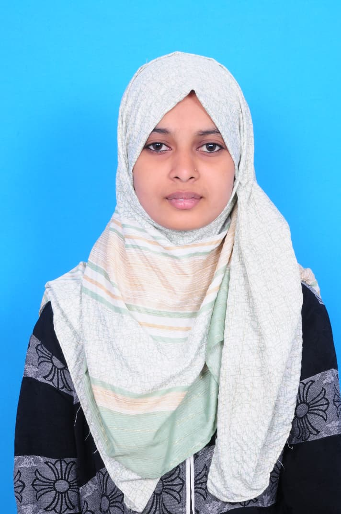

Passionate AI Developer focused on Deep Learning and Computer Vision. I build smart systems that solve real-world problems.

I am an aspiring AI engineer with a strong interest in Deep Learning, Machine Learning, and Computer Vision. I enjoy transforming ideas into intelligent applications that can make an impact in industries like agriculture and automation.
A deep learning-powered system that analyzes fruit images and determines their quality. This project highlights the use of CNN models in real-world agricultural applications.
Tech: Python, CNN, OpenCV
Add your upcoming AI or ML project here to make your portfolio stronger.
📧 iqrafaiza37@gmail.com
Feel free to reach out for collaboration or opportunities!